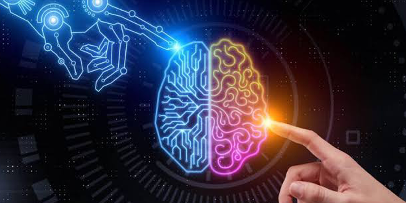
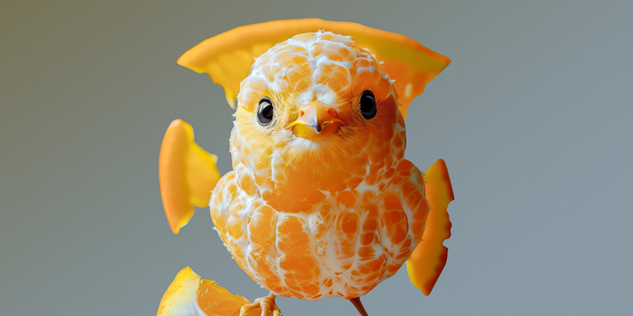
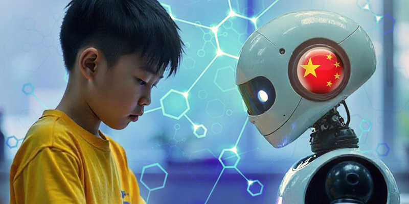

.jpeg)
AI Creative Project — สร้างผลงานจริงจากไอเดียสู่ Portfolio

หลังจากเรียนรู้การใช้ AI ในด้านต่าง ๆ แล้ว ขั้นตอนสำคัญคือการนำความรู้ทั้งหมดมารวมกันและสร้างเป็นผลงานจริง เพราะการเรียนรู้ที่ดีที่สุดไม่ได้เกิดจากการอ่านเพียงอย่างเดียว แต่เกิดจากการได้ลงมือทดลอง สร้าง แก้ไข และพัฒนาผลงานด้วยตนเอง ผู้เรียนสามารถเลือกหัวข้อที่สนใจแล้วเริ่มตั้งแต่การคิด Concept ใช้ AI ช่วยระดมไอเดีย สร้างเนื้อหา เขียน Prompt สร้างภาพ ออกแบบองค์ประกอบ และนำทุกส่วนมาประกอบเป็นผลงานที่สมบูรณ์ ตัวอย่างผลงานอาจเป็น โปสเตอร์ประชาสัมพันธ์ แคมเปญ Social Media อินโฟกราฟิก วิดีโอสั้น Presentation หรือชุดสื่อประชาสัมพันธ์ครบชุด


กระบวนการนี้จะช่วยให้ผู้เรียนเข้าใจว่า AI ไม่ได้เป็นเพียงเครื่องมือสร้างสิ่งต่าง ๆ แบบอัตโนมัติ แต่เป็นส่วนหนึ่งของกระบวนการสร้างสรรค์ที่ต้องอาศัยการวางแผน การตัดสินใจ และการปรับปรุงผลงานอย่างต่อเนื่อง เมื่อสร้างผลงานเสร็จแล้ว สามารถรวบรวมผลงานเหล่านั้นเป็น AI Creative Portfolio เพื่อใช้แสดงความสามารถในการใช้ AI และทักษะด้านการสร้างสรรค์ ซึ่งสามารถนำไปต่อยอดในการเรียน การสมัครงาน การทำงานอิสระ หรือการสร้างธุรกิจในอนาคตได้ สิ่งที่จะได้เรียนรู้ การทำโปรเจกต์ด้วย AI ตั้งแต่ต้นจนจบ การวางแผนกระบวนการสร้างสรรค์ การนำ AI หลายรูปแบบมาทำงานร่วมกัน การตรวจสอบและปรับปรุงผลงาน การสร้าง Portfolio การต่อยอดผลงานสู่การเรียนและอาชีพ
back